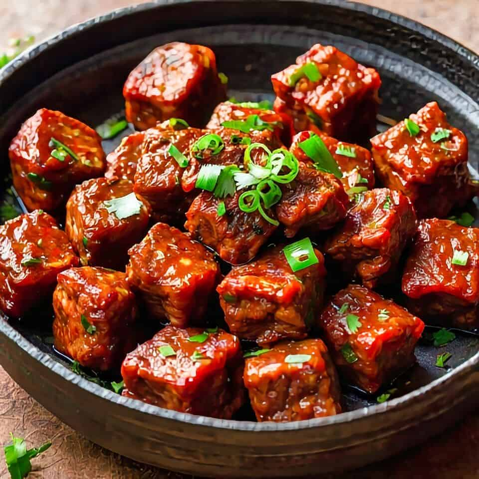
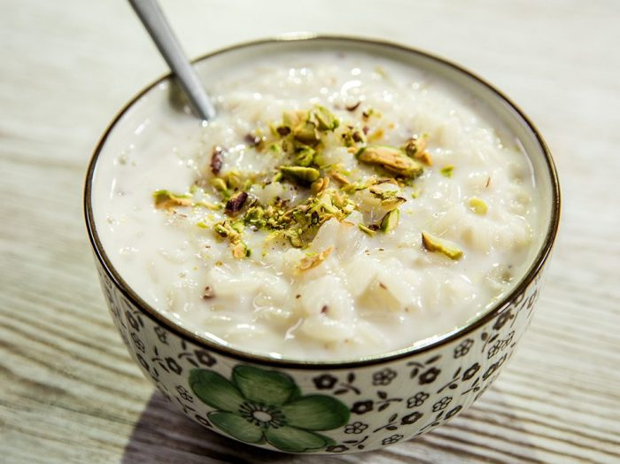
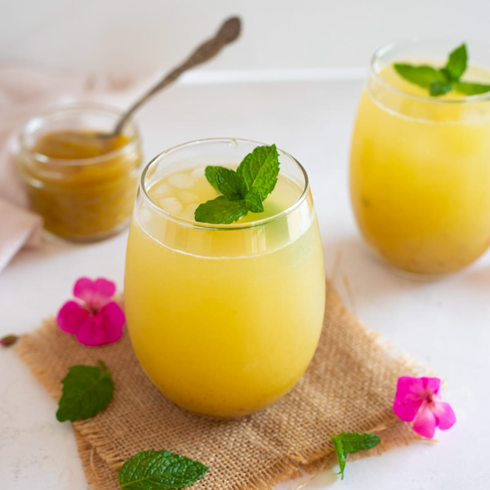
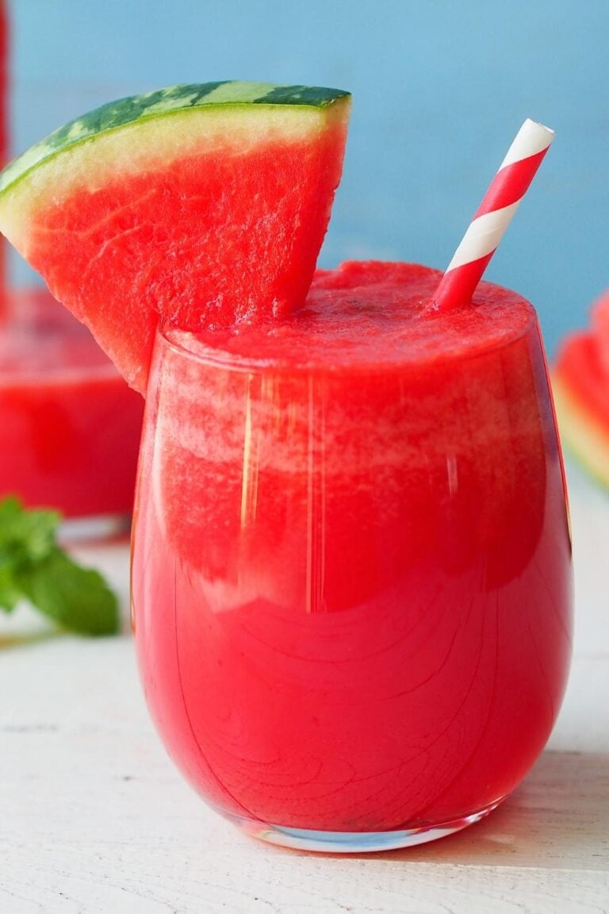
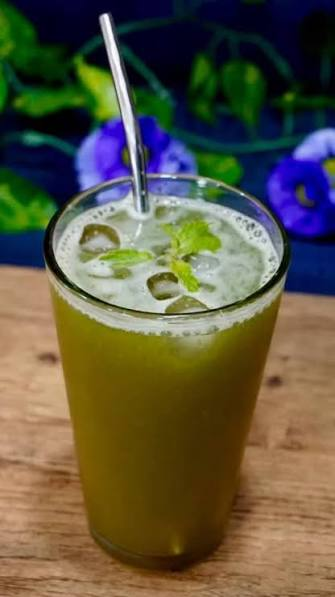
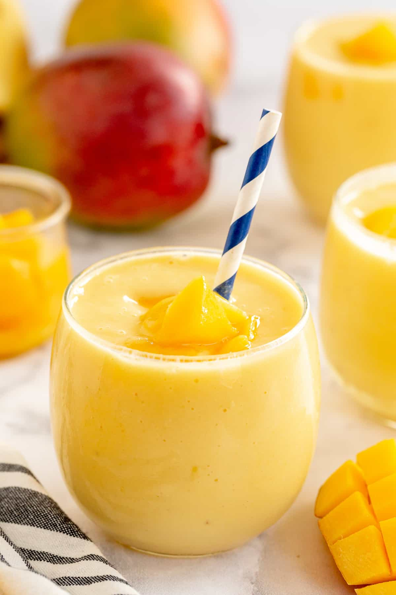
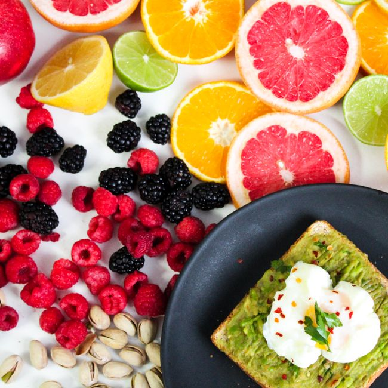

Our Gallery
Authentic Nepali flavours from hearty meals to refreshing sips
Nepali Dishes

Dal Bhat
Lentil soup, rice, vegetables & achaar

Momo
Steamed dumplings with spiced filling

Thukpa
Tibetan-style noodle soup

Sel Roti
Crispy rice-flour ring bread

Gundruk Ko Achar
Fermented greens pickle

Dhido
Buckwheat porridge with gundruk soup

Choila
Spicy grilled Newari buffalo meat

Wo (Bara)
Newari lentil pancake

Yomari
Sweet steamed rice dumpling

Kwati
Nine-bean ceremonial soup

Aloo Tama
Bamboo shoot & potato curry

Sukuti Sadeko
Spiced smoked meat salad

Samay Baji
Traditional Newari ceremonial platter

Tarkari Bhaat
Mixed vegetable curry with rice

Fried Momo
Crispy dumplings with dipping sauce

Chatamari
Nepali rice-flour crepe pizza

Masala Chicken
Aromatic Nepali chicken curry

Vegetable Pulao
Saffron spiced vegetable rice

Naan with Dal Makhani
Tandoor naan & creamy lentil curry

Kheer
Cardamom & saffron rice pudding
Cold Drinks

Masala Cold Soda
Sparkling soda with spice & mint

Rose Sharbat
Floral rose drink with basil seeds

Aam Panna
Raw mango cooler with cumin

Cold Brew Coffee
12-hour cold brew with cardamom
Beverages

Masala Chiya
Traditional Nepali spiced milk tea

Butter Tea (Suja)
Himalayan yak butter salt tea

Tongba
Fermented millet beer, eastern Nepal

Lassi
Thick yoghurt drink — sweet or salted
Fresh Juices

Watermelon Juice
Fresh watermelon with lime

Sugarcane Juice
Cold-pressed cane with ginger & lemon

Mango Smoothie
Alphonso mango, yoghurt & honey

Beetroot Carrot Juice
Beetroot, carrot, apple & ginger
Combo Sets

Dal Bhat Combo
Thali + Momo + Masala Chiya

Momo Party Set
20 pcs Momo + 2 sauces + 2 drinks

Newari Feast
Choila, Bara, Chatamari & Tongba

Refreshment Bundle
Any juice + Sel Roti or Samay Baji